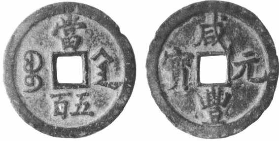

第四节
铜 钱
铜钱是我国流通时间最长，对古代社会经济影响最大的一种货币。从秦始皇到清朝末年，大约流通了二千一百多年，这在世界货币史上也是仅有的。
铜钱是在早期铜铸币的基础上产生的。战国末期，各国商品生产发展较快，商业繁荣，地区间贸易往来也很频繁，货币的使用范围和数量也愈来愈大。但是另一方面，各诸侯国以至大的城邑货币制度极不统一，货币种类相当繁杂，形形色色、大小轻重不一，代表的价值相差悬殊，给商品交换带来极大的不便。秦始皇兼并六国，建立全国统一的政权，推行统一的铜钱制度，适应了当时社会经济发展的需要和人民群众的要求，从此铜钱在全国范围内普遍行使开来。
铜钱的形状，呈周圆孔方的金属圆饼。这种外圆内方的形态，在世界上是东方货币的典型代表，它体现了中国古代天圆地方的宇宙观，象征着君临万方，皇权至上的思想。把钱币和天地宇宙相比拟，说明中国的货币发展到铜钱阶段，货币在人们的心目之中已处于极重要的地位。有人给钱币起个别号为：“孔方兄”，认为它是万能的，说“死生无命，富贵在钱”，“钱之所在，危可使安，死可使活。钱之所去，贵可使贱，生可使杀”。［33］铜钱的形制也就是货币拜物教思想的体现。
铜钱上都镌铸有铭文，与西方钱币上有人物、动物等花纹图案完全不同，这也是东方货币的一大特色。早期铜钱上的文字，一般是标明重量，后期则一般为朝代年号，也有标上铸造地点、铸造机关以及其他标记符号的。制作铜钱的材料（简称币材），主要是铜，一般为铜、锡、铅合金，所以叫做铜钱。由于币材其本身是有使用价值的，所以钱币的重量就是它的价值的标志。历代政府对钱重都有明确规定，但也经常有钱币减重贬值的情况。
铜钱的通行，标志着我国金属铸币制度已发展到成熟阶段。两千多年来随着朝代的演变，它的发行制度和流通制度有着明显的阶段性，随着冶金制作工艺技术的进步，以及地区、民族特点的体现，铜钱的名称、形制和流通状况等也有着不同的发展变化。因此，铜钱的种类非常繁多，样式也千差万别。归纳起来，随着时代的演进，铜钱大体可分为半两钱、五铢钱、通宝钱、制钱四个大类别体系。
一、半两钱
半两钱是最早的铜钱类别体系。秦国在战国末期秦惠文王时，就在本国境内统一了币制，推行“秦半两”圜钱。秦始皇统一全国后，于公元前210年颁布了货币改革令，“以秦法同天下之法，以秦币同天下之币”［34］，在全国实行统一的币制。当时规定黄金为上币，用于大额支付和赏赐，半两铜钱为下币，供日常市场买卖流通。对于以前六国的杂乱货币，一律禁用。对原来可作为货币的珠、玉、龟、贝、银、锡等只可作器饰或宝藏，不能作货币来用。由于黄金使用的范围较狭窄，半两钱使用广泛，实际上半两钱在流通中起主要作用。（图15—10）秦始皇的币制改革，统一了钱币的形制，明确了中央政府的货币铸造权和发行权，从而结束了战国币制紊乱的局面。
图15-10 秦半两钱及钱范
半两钱，有秦半两和汉半两二种。
秦半两是秦朝铸造的，流通的年代如果从秦惠文王算起到汉朝初年，大约有一百三十多年。秦半两造型古朴，开始时为圆孔圆形无轮郭，后改为外圆内方无轮郭，币面有小篆体“半两”二字。史书说“重如其文”［35］，即半两重，实际上由于当时冶炼技术还较原始，各枚重量往往相差悬殊。从出土的实物看，重的一枚可抵轻的三枚以上。
汉半两，是西汉初期铸造的。西汉继承秦的币制，但认为秦半两太重，提出“秦钱重难用，更令民铸钱”，改铸较轻的半两钱，并允许民间私铸，即为汉半两。从汉高祖到汉武帝元狩四年（前119），汉半两共行使了七十余年。
汉半两的形制与秦半两基本相同，但重量不断减轻，名为半两（即十二铢），实际只重八铢、四铢、三铢不等。有些小钱穿孔大而钱体薄小，形似榆，又叫“钱”。汉半两的减重贬值，造成了汉初的通货膨胀，物价上涨。
汉半两的发行制度和流通制度，都不够稳定，七十余年进行了六次币制改革，改革的突出问题为是否允许私人铸钱。汉高祖“许民私铸”，造成低劣小钱到处充斥。后又严禁私铸，规定违者处死，但也未根本解决问题。汉文帝时又允许私铸，各地豪强富商借机大发横财。大夫邓通因铸钱而“富甲天下”，超过王侯。吴王刘濞招亡命之徒采铜铸钱，“富埒天子”，后来终于叛乱。于是汉景帝又禁私铸。汉武帝时大臣们进行了一场经济政策与货币政策大辩论，最后采纳了桑弘羊的主张，将冶金、煮盐、铸钱大权收归官营，从而为以后数千年造币权集中于中央政府奠定了基础。
二、五铢钱
五铢钱与半两钱同是以重量为钱名的铜钱，法定重量为五铢。自汉武帝元狩五年（前118）到唐高祖武德四年（621），共通行了739年，对我国古代钱币发展具有深远影响。
五铢钱的出现，是汉初以来人们在长期实践中摸索、创造出来的，是半两钱进步的标志。它的特点，一是大小轻重适度。秦半两厚重不方便，汉半两钱又太轻小，而五铢钱重量适中，携带或计数都较方便，适合当时社会经济发展状况和价格水平对货币单位的要求，所以历经多次改朝换代还能持续沿用不废。二是形制铸造先进。五铢钱在形制上，继承了半两钱外圆内方的基本形态，同时又吸收了战国时某些刀币、圜钱在边缘上突起轮郭的铸法，这样既可以保护币面文字不被磨损，又可增加钱币的牢度。这种制作规制，一直延续到清末。五铢钱的制作，规定由朝廷的专门机构负责，这就使钱币的质量有了保证，同时采用铜质母范（浇铸金属的模具）的方法，比过去用泥范的工艺技术大为进步，使铸出的钱币大小和式样达到一致。因此，汉武帝五铢钱一般铜色浑厚匀称，文字端庄俊秀。三是确立了铸币权集中于中央朝廷的制度。汉武帝元鼎四年（前113）命令上林三官［36］铸造标准的五铢钱，废除以前各种钱币，“令天下非三官钱不得行”［37］。从此，历代王朝都把铸币权集中于中央。（图15—11）
图15-11 汉五铢钱
在长期流通过程中，不同朝代不同地域的五铢钱也存在着较大的差别和不同的特点，从而也出现了各种不同名目的五铢钱。比如汉武帝“三官五铢”，制作精整，郭纹很细。汉宣帝五铢，上有宣帝年号，币面“五”字的中间相交的两画向内收，外郭比较宽。东汉灵帝、献帝时的五铢，钱背面有四道斜文，从穿孔的四角直达边缘，叫做四出五铢。南朝萧梁铸造四柱五铢和二柱五铢，即在五铢钱正面有两个星点，背面也有两个星点，是为四柱五铢；背面没有星点的，是为二柱五铢。隋文帝时的五铢，重量严格，制作精整，书法笔画较细，“五”字交股处稍曲而圆，钱色发白，又叫“白钱”。
五铢钱流通期间，个别帝王也曾废除五铢钱，改行其他名称钱币，例如，西汉末王莽的“六泉十布”，三国时蜀汉刘备的“太平百钱”，东吴孙权的“大泉”、南北朝前凉张轨的“凉造新泉”、刘宋的四铢钱、二铢钱，北周的“布泉”、“五行大布”、“永通万国”等钱币。这些钱币在形体上大都仍为方孔圆形，但大小、轻重、制作工艺都各有特色，铭文则更是不同。这些钱币大多行使在战乱年代，钱体重量与法定重量差别很大，处于通货膨胀状态，而且流通的时间也都较短暂。其中较突出的是王莽时的币制。王莽热衷于货币制度改革是有他政治和经济目的的，一是要否定西汉的既定制度，二是为了聚敛社会财富，因此八年间进行了四次币制改革，废除了五铢钱，实行了各种各样的复古式的货币。（图15—12）他在始建国二年（10年）的第三次币制改革中，推行所谓宝货制，一次即搞出用金、银、铜、龟、贝五种币材制作的28种货币。用龟甲、贝壳交易时须先量尺寸再计价值，其麻烦可想而知。布币分成十级，从小布一百到大布千钱，每级实际重量只差一铢，不识字的人根本无法分辨。因而人民拒绝使用这些钱币，暗地偷偷坚持以五铢钱来交易。
图15-12 王莽时的货币“大泉五十”铜范
王莽推行光怪陆离的特殊的货币制度，却也促进了铸造钱币技术工艺水平的提高。例如其中“金错刀”的错金（以金丝金片嵌入刀币的文、郭面上）技术是相当高明的，“一刀”两字能发射出水银的光彩，是珍贵的艺术品。东汉张衡在《四愁诗》中写道：“美人赠我金错刀，何以报之英琼瑶”，把它和珠玉相比美。又如“货布”，长二寸半，宽一寸，四枚连在一起，恰好等于汉制一尺，以此标榜它源于先秦的纤维织物布帛货币。这种货布制造规格严谨，检查上千枚，其大小轻重差别也很小，因而可用这种货布来确定汉代的度和衡的规制。但是，钱币华美的外表无法掩盖它实际价值的降低，王莽的新币制使物价越来越高，米价涨到每石万钱。
三、通宝钱
通宝钱在货币发行和流通制度上，比五铢钱又进了一步。通宝钱是以通宝（或元宝、重宝）为钱名的钱币，改变了过去以重量为钱名的旧制，而以帝王年号为主要标志，在流通中取代了五铢钱。这种钱币，从唐高祖武德四年（621）开始铸造发行，到清朝末年，共流通了1290年，对中国封建社会中后期经济有很大的影响。
通宝的含义是通行的宝货。由于过去铜钱经常减重，钱名重量与实际币重相差悬殊，采用通宝的名称可以掩盖这样的矛盾。同时也表明钱币的流通手段职能大大加强，交换中不必过于强调它的重量，就可成为社会公认的媒介物。通宝钱的形状仍为外圆内方，肉好皆有周郭。［38］直径一般为2.4厘米左右。币材为铜、锡、铅合金，一般一枚重约四克，一千枚合唐衡制共重六斤四两。最早的通宝钱为唐高祖时铸造的开元通宝。（图15—13）法律规定，开元通宝每枚重量为2.4铢，每十文钱币重一两。后人嫌2.4铢这个数目麻烦，就将“钱”作为一个新的衡制单位，每一枚钱币的重量为一钱，十钱等于一两。开创了两以下十进位的衡法。后来各朝铸钱，大小轻重都以开元通宝为标准，“钱”这一重量单位就沿用到现代。
图15-13 开元通宝
通宝钱的一个特征，是历代皇帝为了表明自己的统治权，都在钱币的铭文上大做文章。开元通宝是唐王朝开国第四年开始铸造的，取名开元的意思是自唐高祖李渊开始，要去除过去的币制积弊，富国强民，开辟新纪元。以后各朝皇帝大都把自己的年号铸在钱币上，作为他至高无上的统治权力的象征，客观上也是对币值的一种保证，所以叫做年号钱。年号钱最早出现于五铢钱体系南北朝时成汉李寿的汉兴钱，但当时仅系偶然现象，流通时间很短。但在通宝钱体系，从唐高宗乾封泉宝以后，直至清末，各朝所铸钱币多数都是年号钱。如两宋320年间，共铸造发行了45种年号钱。
通宝钱的铭文书法和图案标记具有较高的艺术性。总的说来，五铢钱多为篆书，通宝钱在唐代多为隶书，五代十国的南唐开始采用真书，两宋时则真、草、行书与隶、篆体并用，并且出现了“对钱”。对钱，是同一种年号钱，同时有两种或多种书体，或篆、真，或行、隶，相配成对，而钱的铜质、大小、轻重、厚薄以至穿孔、轮廓的广狭、制作风格都完全相同。如北宋仁宗、神宗时的真、篆书对钱；徽宗时的篆、行书对钱，篆、隶书对钱；南宋高宗时篆、隶、真三体书对钱等。与宋同时的辽、金、西夏等国也都有各种不同书体的钱币。通宝钱许多铭文书体很讲究书法艺术，一些钱币上的文字多出自名家手笔。如唐初的开元通宝为欧阳询所书，是“八分书”隶体，极工整。宋初的淳化元宝有宋太宗亲自书写的真、行、草三种书体，即所谓御笔钱。崇宁通宝、大观通宝的多种钱币都是宋徽宗所书，铁画银钩，号称瘦金体。元祐通宝的文字则有司马光、苏东坡写的。此外，还有不少钱币上铸有各种图案或标记，如开元通宝上铸有星、月、太阳、星月、双月、莲纹等等。有一种开元钱，在穿孔的上面有一仰月如，也有作俯月的如，称做“ ”。此“
”。此“ ”来源，有人说是在向皇帝进呈钱模蜡样时，被皇后掐了一指甲印，铸钱时不敢改动，就遗留在钱背上。更有人说这“
”来源，有人说是在向皇帝进呈钱模蜡样时，被皇后掐了一指甲印，铸钱时不敢改动，就遗留在钱背上。更有人说这“ ”是杨贵妃的指甲痕，对此金朝人曾写过“金钗坠后无因见，藏得开元一捻痕”的诗句。另一些专家认为，这是受到西域钱币上铸星月图案的影响，是钱币的一种图案或标记。
”是杨贵妃的指甲痕，对此金朝人曾写过“金钗坠后无因见，藏得开元一捻痕”的诗句。另一些专家认为，这是受到西域钱币上铸星月图案的影响，是钱币的一种图案或标记。
四、制钱
制钱是明、清两代所铸造的钱币，是通宝钱体系的一种特殊类型。按照明朝规定，本朝所铸造的钱币称为“制钱”，带有法定货币的意思，对以前各朝代的钱币则统称为“旧钱”。制钱和旧钱可以并行流通，但在兑换比价方面有差别。比如明嘉靖时就规定，嘉靖制钱七文可兑白银一分，而前代旧钱则需30文。清代币制仍然沿袭明代旧制，所以，制钱制度一直延续到清末。制钱流通时间，大约共五百多年。清代制钱的消亡，也就结束了铜钱流通的历史。
制钱的形制，仍然维持了方孔圆形。名称也是以各个皇帝的年号为钱名，如洪武通宝、永乐通宝等。明朝统治者在货币体制上比较注重纸币，所以开国以后对铜钱铸造和使用时开时禁，从宣德到嘉靖的几十年间则完全停铸和禁用铜钱，民间盛行纸币、白银或实物交易。嘉靖六年（1527）因纸币宝钞膨胀过甚，不能再用，才又恢复铸钱。从洪武到正德的九个年号的制钱，都是嘉靖时补铸的。清朝入关前已铸造自己的钱币，入关后制定钱法，有五种钱式，即：一式为光背（钱的背面没有文字），仿古钱形式；二式为仿唐开元钱形式，钱背面有一个汉字用来标明铸造机关的局名；三式为钱背有“一厘”二字；四式为钱背有两个满文标志铸造机关的局名；五式为钱背有满、汉文各一字标志铸造机关的局名。以后各朝每改一次年号就新铸一种年号钱，从康熙通宝到宣统通宝共十种，形制则选用上述五种范式中的几种来铸造。康熙晚年还铸造过一种字形写法不同的康熙通宝，色泽金黄、光闪夺目、质地精细，据说这种钱内含有黄金，是年羹尧任四川总督时，将庙里鎏金罗汉熔铸而成的钱币，所以人民把它叫做罗汉钱。清末制钱曾一度使用机器制造，叫做机制钱。如光绪十四年（1888）广东等地都曾制过。但因成本较高，不如造铜元有利，因此铸造的数量不多，流通不广。
清代制钱，在嘉庆、道光年间，私铸小钱大量涌现，日本的轻钱也大量流入。同时，鸦片贸易使白银大量外流，结果市场上铜钱与白银的比价变为银贵钱贱，以铜钱计算的物价不断上升。咸丰时期制钱制度进一步混乱。咸丰三年（1853）政府铸造大钱，面额价值划分15个等级，普通制钱仍称咸丰通宝，当四的至当五十的叫咸丰重宝，当百的至当千的叫咸丰元宝，（图15—14）使用的材料种类也很多，有铜的、铁的、铅的，铜的里面又分为黄铜的、红铜的、紫铜的。不仅各种大钱币值计算不同，而且随着实际币值的下跌，钱的重量也常有变动，结果钱体轻重和面额大小互相矛盾，轻重倒置，当五十的钱体比当百的大，当百的又重于当千的。结果比王莽的宝货制还乱，通货严重膨胀，物价猛涨。

图15-14 咸丰元宝
制钱的流通，经过咸丰时的大乱，到光绪时期已是强弩之末，虽经几次整顿但仍日趋消亡。原因是鸦片战争以后，中国半封建半殖民地制度下的商品经济有了发展，要求比较简便易行的货币与它相适应。而制钱的种类繁杂，形制很不规范划一，成色质地也参差不齐，一串钱之中，经常夹杂质差个小的恶钱，人们把一串千文中夹恶钱百文以内的叫“毛钱”，夹百文以上的叫“一九钱”，二百文以上的叫“二八钱”，依此类推，甚至有“倒四六钱”，老实的商人、百姓经常吃亏上当。各地区流通的制钱也不一致，如京城行使当十大钱，外地则行使一文制钱。外地客商在京售货后须把大钱换成制钱，经常受到克扣盘剥。制钱的计量单位——“吊”的计算方法，各地也不一致。顺治时规定制钱一枚叫“一文”，千枚叫“一吊”。光绪时京津一带100文为一吊，东三省160文为一吊，山东、河北500文为一吊，长江一带每吊为980文。换算复杂繁难，极为不便，不利于民族工商业的发展。另一原因是，外国货币侵入国内，特别是国内铜元、银角相继兴起，逐渐代替了制钱的地位。以铜元为例，铜元形制工整划一，取消了制钱的中孔，花纹细致，不易假造。所以铜元一出现，人们都乐于使用，开始时它的市价高于名义价值，原定铜元100枚当银元一元，光绪二十八年市价为银元一元换铜元80枚到90枚。铜元仍沿用“文”或枚为单位，一般为一枚合制钱10文。但它的重量比当十制钱轻，咸丰当十大钱一枚重六钱，铜元一枚只重二钱。由于铜元成本低，可取得双倍利润，于是各省官僚纷纷铸造。铜元的铸造量，从光绪三十年算起，五年间增长了六倍多，从此流行了两千多年的方孔圆钱被挤出历史舞台。
上述四大类型铜钱体系，主要是历代政府发行的钱币，此外，历代农民起义军也有不少铸造铜钱的。一般的说，唐以前农民起义军铸造的货币，多属于五铢钱类型，唐以后的多属于通宝类型，如明末李自成的“永昌通宝”、张献忠的“大顺通宝”。清末太平天国在相当大的地域行使过多种铜钱，如“太平通宝”等。农民起义军的钱币，大多比当时政府的货币币值稳定，受到人民群众拥护。据说，明末人们甚至把“永昌通宝”、“大顺通宝”缝在帽子上做装饰品。
我国古代钱币，除铜质的以外，还有用铁、铅、锡甚至泥等材料制作的。这些材料的价值都较铜的价值低，所以这些材料制作的钱币一般都是作为铜钱的减值形式出现的，流通于战乱或通货膨胀的时代。铁钱是最常见的低值钱币。最早的铁钱，大约是在西汉初期出现的。近年来，长沙、衡阳西汉墓发掘中，就出土过较多的铁钱，有的一次发掘就出土三百余枚铁钱，其中有的铁钱形制类似汉文帝时的四铢半两钱。［39］铁制的五铢钱在文献记载中就比铁半两钱要多了。《梅福传》张宴注说，西汉成帝“河平二年，沛郡铁官铸钱，如星飞上去”［40］，据说这是最早的铁五珠。西汉以后许多朝代，都行使过铁钱。如：东汉公孙述铁五铢、三国刘备的直百五铢以及南北朝、五代十国、两宋时代的铁制通宝钱。比较有名的如南朝梁武帝的铁五铢，价值极低，交易时要用车载铁钱支付，计价时论贯（千枚）计算，物价上涨到一斗米卖80万钱。北宋各朝铸造的铁钱种类和数量最多，两淮和四川地方专门行使铁钱，规定铁钱不出界，铜钱不入境。宋太宗时四川因铁钱发行过多，一匹罗要两万铁钱。清咸丰年间发行铁制钱，开始时因制作精整还受欢迎。后来又铸造铁大钱，从当五到当千有六种之多。由于铁大钱贬值太厉害，日常买卖交易以铁大钱计算的价格比铜大钱高五倍，咸丰七年正月初十日北京商户干脆拒不收用，形同罢市。
我国铜钱制度，长期以来每一枚法定重量基本上是不变的，这是与外国金属铸币不同的一个突出特点。例如通宝钱，从唐武德四年（621）确定开元通宝一枚重一钱以后，一千余年虽经无数次改朝换代而钱的法定重量却没变动。但是短时间钱币减重贬值又是经常出现的。自从汉武帝推行五铢钱，将钱币铸造权集中于中央朝廷以后，钱币减重贬值就成为统治阶级用来掠夺人民百姓财产增加财政收入的一个手段了。由于钱币的实际价值与名义价值相分离，从而同时伴随着出现通货膨胀和物价上涨。因此，从铜钱流通的两千余年长期历史来看，它的购买力水平总是处于经常波动的状态。物价上涨到万倍以上的至少也有五六次，而上涨十倍百倍的次数就更多了。历代政府实行铜钱贬值的方法，基本上有三种类型。一是减重，即将每枚钱币的重量减轻，使币材的重量小于钱币的名义重量。例如汉初的半两钱，原重十二铢，后减为三铢，但名义仍是半两，等于膨胀了四倍。董卓铸造的小钱，将五铢钱改铸一铢重，膨胀了五倍。减重钱又轻又小，人们对此十分厌恶，给它们起了各种别号，如环、翦边、鹅眼、 钱、大眼贼、短命等等。如东晋沈充铸的钱极其薄小，每枚仅重一克，人们比作榆，唐代诗人们就常提到它，李贺诗云：“榆相催不知数，沈郎青钱夹城路”，李商隐诗云：“谢家轻絮沈郎钱”，反映了人民的不满情绪。二是铸大钱，币材重量虽稍有增加，形体较大，但规定的面额价值要超过币材的几十倍甚至千百倍。如王莽的宝货制，“大泉”铜币币材比五铢钱加重2.4倍，面额作价等于五铢钱的50倍，实际等于贬值到1／20。“契刀”铜币，一枚当五铢钱500使用，按其重量则等于贬值成1／120以下。“错刀”币，一枚当五铢钱5000枚使用，约等于贬值成1／720。短时间内货币如此急剧贬值，使物价狂涨不已。史称：“赋敛民财什取五”，“米石万钱，人相食。”［41］三是改变币材的金属成分，降低贵金属铜的比重。如宋徽宗时宰相蔡京推行夹锡钱，即在铜钱合金配方中减少铜的比重，增加铅锡的比重，使黑锡和白锡占43%以上。含铜量只有57%左右，而标准的唐开元钱含铜量一般均在83%以上。结果夹锡钱币值降到1／20，引起通货膨胀，连宋徽宗也承认，“夹锡之患，甚于当十钱”。
钱、大眼贼、短命等等。如东晋沈充铸的钱极其薄小，每枚仅重一克，人们比作榆，唐代诗人们就常提到它，李贺诗云：“榆相催不知数，沈郎青钱夹城路”，李商隐诗云：“谢家轻絮沈郎钱”，反映了人民的不满情绪。二是铸大钱，币材重量虽稍有增加，形体较大，但规定的面额价值要超过币材的几十倍甚至千百倍。如王莽的宝货制，“大泉”铜币币材比五铢钱加重2.4倍，面额作价等于五铢钱的50倍，实际等于贬值到1／20。“契刀”铜币，一枚当五铢钱500使用，按其重量则等于贬值成1／120以下。“错刀”币，一枚当五铢钱5000枚使用，约等于贬值成1／720。短时间内货币如此急剧贬值，使物价狂涨不已。史称：“赋敛民财什取五”，“米石万钱，人相食。”［41］三是改变币材的金属成分，降低贵金属铜的比重。如宋徽宗时宰相蔡京推行夹锡钱，即在铜钱合金配方中减少铜的比重，增加铅锡的比重，使黑锡和白锡占43%以上。含铜量只有57%左右，而标准的唐开元钱含铜量一般均在83%以上。结果夹锡钱币值降到1／20，引起通货膨胀，连宋徽宗也承认，“夹锡之患，甚于当十钱”。